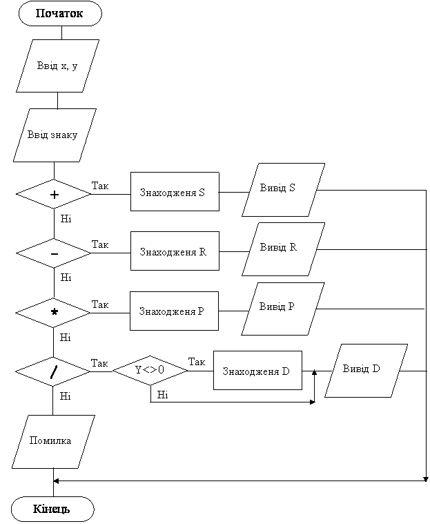

Назад
Зміст
Вперед
Задачі з оператором case
Приклад 1
Дано два цілих числа x, y та знак операції (+, –, *, /). Знайти x+y, x-y, x*y, x/y в залежності від введеного знаку.
Дано: два цілих числа x, y та символ, що є знаком арифметичної операції
Знайти: виконати арифметичну операцію та вивести результат на екран.
Змінні:
Вхідні:
- x– перше число (ціле)
- y – друге число(ціле)
- z – знак арифметичної операції (символ)
Вихідні:
- s– сума x+y (ціле)
- r – різниця x-y (ціле)
- p – добуток x*y (ціле)
- d – частка x/y (дійсне, бо є /)
Алгоритм
- Ввід чисел x,y
- Ввід z (арифметичної операції), це буде змінна вибору.
- Перевіряємо значення цієї змінної:
- Потрібно знайти суму, якщо z='+', тобто маємо сталу вибору '+'. Якщо змінна вибору z співпадає з сталою вибору '+', потрібно виконати два оператори: знайти суму s:=x+y, та вивести її значення на екран writeln(s). Тому ці оператори беруться у операторні дужки begin s:=x+y; writeln(s); end.
- Потрібно знайти різницю, якщо z='-', тобто маємо сталу вибору '-'. Аналогічно, якщо змінна вибору z співпадає з сталою вибору '-', потрібно виконати оператори begin r:=x-y;writeln(r); end
- Потрібно знайти добуток, якщо z='*', тобто маємо сталу вибору '*'. Аналогічно, якщо змінна вибору z співпадає з сталою вибору '*', потрібно виконати оператори begin p:=x*y;writeln(p); end
- Потрібно знайти частку, якщо z='/', тобто маємо сталу вибору '/'. Аналогічно, якщо змінна вибору z співпадає з сталою вибору '/', потрібно виконати оператори begin d:=x/y;writeln(d:1:2); end. Оскільки d дійсне число, то його потрібно виводити у фор матованому вигляді, наприклад, з двома знаками після крапки.
- При інших значеннях змінної вибору потрібно надрукувати слово 'помилка'
Блок-схема програми

Програма
var x,y:integer;s,p,r:longint;d:real;z:char;
begin
write('введіть два числа ');readln(x,y);
write('введіть знак (+-*/)');readln(z);
case z of
'+': begin s:=x+y;writeln(s); end;
'-': begin r:=x-y;writeln(r); end;
'*': begin p:=x*y;writeln(p); end;
'/': begin d:=x/y;writeln(d:1:2); end;
else writeln('помилка');
end;
end. |
Приклади результатів роботи програми
| Ввід | Вивід |
5 7
+ | 12 |
5 7
- | -2 |
5 7
* | 35 |
5 7
/ | 0.71 |
5 7
= | помилка |
Приклад 2
Написати програму, яка вводить 3 значення температури та виводить таке меню:
Введіть номер завдання:
1- обчислення максимальної температури;
2 -обчислення мінімальної температури;
3 -обчислення середньої температури.
Програма повинна виконати завдання, номер якого буде введено.
Дано: три цілих числа, що є значеннями температури та ціле число (зі значенням 1, 2, або 3), яке є номером завдання. Номер завдання вказує, які дії виконувати з значеннями температури.
Знайти: максимальну, або мінімальну або середню температуру, в залежності від введеного номеру завдання.
Змінні:
Вхідні:
- t1– перша температура (ціле число)
- t2– друга температура (ціле число)
- t3– третя температура (ціле число)
- n – номер завдання (ціле число)
Вихідні:
- max– максимальна температура(ціле число)
- min – мінімальна температура(ціле число)
- sred –середня температура(дійсне число, бо sred=(t1+t2+t3)/3)
Алгоритм
- Ввід чисел значень температури t1,t2,t3
- Вивід меню, яке пояснює, що виконується по кожному завданню
- Ввід n номеру завдання, це буде змінна вибору.
- Перевіряємо значення цієї змінної:
- Якщо введено n=1, то потрібно знайти найбільше з трьох чисел (max). Можливі три випадки: найбільше t1 (коли воно більше t2 та t3), найбільше t2 (коли воно більше t1 та t3), найбільше t3 (коли воно більше t1 та t2). Потім знайдене значення виводиться на екран.
- Якщо введено n=2, то потрібно знайти найменше з трьох чисел (min). Можливі три випадки: найменше t1 (коли воно менше t2 та t3), найменше t2 (коли воно менше t1 та t3), найменше t3 (коли воно менше t1 та t2). Потім знайдене значення виводиться на екран.
- Якщо введено n=3, то потрібно знайти середнє арифметичне трьох чисел (sred). Воно дорівнює сумі чисел, поділених на їх кількість sred:=(t1+t2+t3)/3. Потім знайдене значення виводиться на екран.
- Якщо введено будь-яке інше значення n, повинно виводитись повідомлення „помилка”.
Програма
Var
t1,t2,t3,n:integer;max,min:integer;sred:real;
Begin
write('Введiть t:');read(t1,t2,t3);
writeln('Введiть номер завдання:');
writeln('1 - знаходження max');
writeln('2 - знаходження min');
writeln('3 - знаходження sred');
readln(n);
case n of
1:
begin
if (t1>=t2)and (t1>=t3) then max:=t1;
if (t2>=t1)and (t2>=t3) then max:=t2;
if (t3>=t1)and (t3>=t2) then max:=t3;
writeln(max);
end;
2:
begin
if (t1<=t2)and (t1<=t3) then min:=t1;
if (t2<=t1)and (t2<=t3) then min:=t2;
if (t3<=t1)and (t3<=t2) then min:=t3;
writeln(min);
end;
3:
Begin
sred:=(t1+t2+t3)/3;
writeln(sred:1:1)
end;
else writeln('помилка');
end;
end. |
Приклади результатів роботи програми
| Екран при вводі | Вивід результату |
Введiть t: 6 7 5
Введiть номер завдання:
1 - знаходження max
2 – знаходження min
3 - знаходження sred
1 | 7 |
Введiть t: 6 7 5
Введiть номер завдання:
1 - знаходження max
2 – знаходження min
3 - знаходження sred
2 | 5 |
Введiть t: 6 7 5
Введiть номер завдання:
1 - знаходження max
2 – знаходження min
3 - знаходження sred
3 | 6.0 |
Введiть t: 6 7 5
Введiть номер завдання:
1 - знаходження max
2 – знаходження min
3 - знаходження sred
3 | помилка |
Варіанти задач
- Дано ціле число, що вказує номер дня у тиждні. Надрукувати назву дня (1– понеділок, 2 – вівторок, ...).
- Дано ціле число, що визначає оцінку. Вивести опис оцінки (1-3: погано, 4-6: задовільно, 7-9: добре, 10-12: відмінно, інші випадки: помилка).
- Дано ціле число, що визначає номер місяця. Вивести пору року (літо, зима, весна, осінь).
- Дано номер місяця. Виведіть на екран кількість днів у цьому місяці (рік не високосний).
- Дано номер телевізійного каналу. Надрукувати його назву.
- Написати програму, яка вводить два цілих числа та виводить таке меню:
Введіть номер завдання:
1 – знаходження суми чисел;
2 – знаходження модулю різниці чисел;
3 – знаходження добутку чисел;
Програма повинна виконати завдання, номер якого буде введено.
- Написати програму, яка вводить натуральне число та виводить таке меню:
Введіть номер завдання:
1 – обчислення квадратного кореню;
2 – піднесення у квадрат;
3 – обчислення синусу;
4 – обчислення косинусу;
Програма повинна виконати завдання, номер якого буде введено.
- Написати програму, яка вводить радіус та виводить таке меню:
Введіть номер завдання:
1 – обчислення довжини кола;
2 – обчислення площі кола;
3 – обчислення об’єму сфери.
Програма повинна виконати завдання, номер якого буде введено.
- Написати програму, яка виводить таке меню:
Введіть номер завдання:
1 – обчислення периметра прямокутника;
2 – обчислення площі прямокутника;
3 – обчислення об’єму паралелепіпеду.
Програма повинна запросити необхідні дані та виконати завдання, номер якого буде введено.
- Написати програму, яка вводить три цілих числа та виводить таке меню:
Введіть номер завдання:
1 – обчислення максимального числа;
2 – обчислення мінімального числа;
3 – обчислення суми чисел.
4 – обчислення добутку чисел.
Програма повинна виконати завдання, номер якого буде введено.
- Написати програму, яка вводить трьохзначне число та виводить таке меню:
Введіть номер завдання:
1 – обчислення максимальної цифри;
2 – обчислення мінімальної цифри;
3 – обчислення суми цифр.
4 – обчислення добутку цифр.
Програма повинна виконати завдання, номер якого буде введено.
- Елементи кола пронумеровані так: 1 – радіус, 2 – диаметр, 3 – довжина, 4 –площа. Дано номер елементу та його значення. Знайти значенні інших елементів.
- Одиниці довжини пронумеровані так: 1 — дециметр, 2 — кілометр, 3 — метр, 4 — міліметр, 5 — сантиметр. Дано номер одиниці та довжину відрізку у цих одиницях. Знайти довжину відрізка у метрах.
- Одиниці маси пронумеровані так: 1 — килограм, 2 — міліграм, 3 — грам, 4 — тонна, 5 — центнер. Дано номер одиниці та маса тіла у цих одиницях. Знайти масу тіла у килограмах.
- Мастям гральних карт присвоєни номери: 1 — пики, 2 — трефи, 3 — бубни, 4 — черви. Достоинству карт, що старші десятки, присвоєни номери: 11 — валет, 12 — дама, 13 — король, 14 — туз. Дано два цілих числа: N — достоинство (6 <= N <= 14) та M — масть карти (1<= M <= 4). Вывести назву карти у вигляді «шестерка бубен», «дама червей», «туз треф» и т. п.
- Дано ціле число від 100 до 999. Вивести рядок–опис цього числа. Наприкла, 256 – двісті п’ятдесят шість.
Назад
Зміст
Вперед